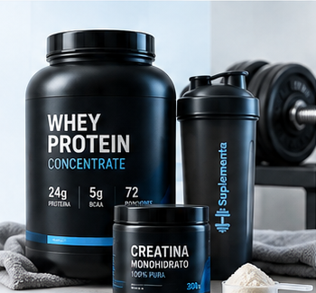

Tu guía en suplementos deportivos
Respondé 9 preguntas y te sugerimos qué tipo de suplementos deportivos se adaptan a tu perfil, con productos de tiendas online uruguayas.

Las sugerencias de esta herramienta son de carácter informativo y comercial y no sustituyen el asesoramiento de un médico, nutricionista u otro profesional de la salud.
Paso 1 de 9
Tus resultados
Según tus respuestas, estas son las categorías más relevantes para vos.